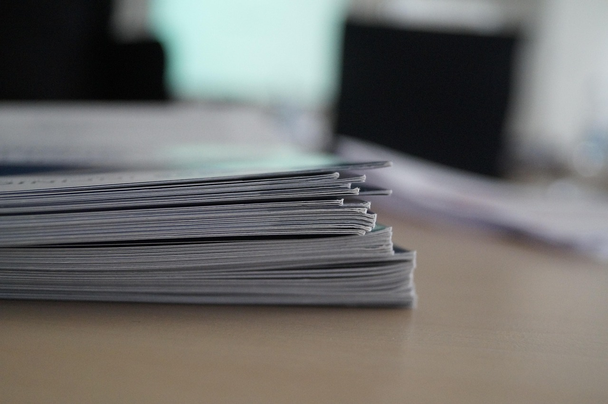

자주 묻는 질문
하루가 멀다하고 같은 말 계속 하게 만드는 질문들을 모았습니다.

- (국민내일배움카드) 재직자인데 온라인 수강신청 시 국민취업지원제도 참여자 안내문구가 뜹니다.
- 모바일 앱(웹)의 기존 데이터 또는 캐시가 있을 경우 발생하는 것으로 확인됩니다. 모바일 앱 캐시 삭제(또는 앱 삭제 후 재설치), PC를 통하여 온라인 수강신청하시기 바랍니다.
- (훈련기관) HRD행정지원시스템 로그인이 되지 않습니다.
- HRD행정지원시스템을 처음 이용하시거나, 기존 사용하던 공동인증서가 변경된 경우 아래와 같이 공동인증서를 등록하여 주시기 바랍니다. ○ 고용24 홈페이지 훈련기관 로그인 > 회원서비스 관리 > 훈련기관 공동인증서 등록 공동인증서 등록 이후에도 갱신 등으로 인증서가 변경된 경우 다시 등록이 필요합니다.
- (국민내일배움카드) 편의점에서 카드로 결제를 했는데 결제내역이 조회되지 않습니다
- 소지하고 계신 실물카드는 일반적인 신용/체크카드와 동일하게 일상에서도 사용 가능합니다. (예: 편의점, 식당, 주유소, 쇼핑몰 등의 카드가맹점) 다만, 위와 같이 일반적인 카드가맹점에서의 카드 사용은 고용24와 무관하며 각 카드사의 홈페이지/모바일앱에서 관리 및 회원님의 실제 은행계좌에서 결제되오니 참고 바랍니다. 고용24 홈페이지에서 조회되는 "국민내일배움카드 사용내역"은 회원님의 고용24 계정에 생성된 가상의 정부지원금 내역이오니 카드 사용에 착오 없으시기 바랍니다. ▶[카드(정부지원금)사용내역 바로가기]◀
- (국민내일배움카드)구체적으로 어떤 직업훈련과정을 수강할 수 있나요?
- 국민내일배움카드는 '직업능력심사평가원'의 심사평가 절차를 거친 훈련과정을 수강하였을 때 지원하며, 구체적 과정은 고용24 홈페이지를 통해 확인 가능합니다. 취미, 순수 자기계발 등 취업 이외 목적의 훈련은 허용되지 않으며, 고용센터 상담 과정에서 훈련 후 구체적 취업계획 등을 확인할 예정입니다.